A História do Jogo
"A Link to the Past" é considerado um dos jogos mais icônicos da franquia Zelda. Lançado para Super Nintendo, marcou gerações e trouxe elementos essenciais para toda a série, como a Master Sword e a divisão entre mundos. Dono de uma narrativa profunda e com um enredo tão bom, definiu o padrão que viria a ser conhecido como a Fórmula Zelda

🌩️ A Lenda Começa
A tempestade rugia sobre Hyrule quando um jovem chamado Link despertou, perturbado por uma voz que parecia atravessar as paredes e a própria noite.
“Ajude-me… por favor…”
Era a princesa Zelda, falando diretamente à sua mente, implorando por socorro.
Confuso, mas guiado por um pressentimento irresistível, Link se levantou e saiu sob a chuva pesada. O castelo de Hyrule, envolto por sombras e guardas enfeitiçados, erguiu-se diante dele como uma ameaça silenciosa. Algo terrível acontecia ali dentro.
🏰 O Resgate Proibido
Seguindo instruções deixadas por seu tio, Link encontrou uma passagem secreta para os calabouços. Em corredores úmidos, iluminados por tochas vacilantes, ele enfrentou guardas dominados pela magia negra até finalmente encontrar Zelda.
Com a voz fraca, ela explicou que o feiticeiro Agahnim havia tomado o reino, derrubado o rei e planejava romper o antigo selo dos Sete Sábios.
Juntos, Link e Zelda escaparam pelas catacumbas até o santuário, onde ela estaria segura — ao menos por um tempo.
🧙♂️ O Feiticeiro e o Selo
Agahnim, um mago de aparência austera, havia se infiltrado na corte como conselheiro, mas suas intenções eram sombrias: trazer de volta o demônio Ganon, aprisionado há eras.
Para isso, ele precisava capturar as descendentes dos sábios — incluindo Zelda — e sacrificá-las para quebrar o selo que mantinha o mal contido.
Link sabia que, para enfrentar um poder tão grande, precisaria de uma arma lendária: a Master Sword.
🗡️ A Espada Sagrada
A jornada o levou por florestas densas, montanhas traiçoeiras e templos esquecidos. Ele enfrentou monstros antigos e provou sua coragem para obter os três Pendentes da Virtude.
Somente então, no coração do Bosque Perdido, envolta por um brilho etéreo, ele encontrou a Master Sword, cravada em um pedestal ancestral.
Ao tocá-la, a floresta pareceu prender a respiração: o herói escolhido havia despertado.
🌌 Uma Ponte Entre Dois Mundos
Mesmo com a Master Sword, Link chegou tarde demais para impedir Agahnim. O feiticeiro realizou seu ritual, enviando Zelda para outra dimensão e abrindo o caminho para o caos.
Com um golpe de magia, Agahnim lançou Link para o Dark World — um espelho distorcido de Hyrule, criado pela corrupção da Triforce tocada por Ganon.
Ali, tudo refletia os sentimentos e desejos ocultos de quem entrava, e apenas aqueles com o coração forte podiam manter sua forma humana.
🗝️ Libertando as Herdeiras
Para restaurar o selo e salvar Zelda, Link precisava libertar as sete donzelas aprisionadas em masmorras pelo Dark World.
Cada templo era mais desafiador que o anterior: monstros colossais, labirintos tortuosos, paisagens desoladas.
Mas a esperança renasceu a cada vitória. Uma a uma, as descendentes foram libertas, recuperando sua força ancestral.
🐗 O Senhor das Trevas
Ao derrotar Agahnim mais uma vez no interior do Dark World, sua forma verdadeira finalmente emergiu: Ganon, o grande inimigo, o antigo ladrão tomado pela ambição da Triforce.
Ele fugiu para a Pyramid of Power, seu covil sombrio, onde aguardava o confronto final.
A batalha foi feroz. O chão tremeu, a escuridão se retorceu, e a Master Sword brilhou como um farol no vazio. Por fim, com um golpe certeiro, Link derrotou Ganon e reivindicou a Triforce, que atendeu aos seus desejos puros.
🌅 O Amanhecer de Hyrule
Em um clarão dourado, o equilíbrio foi restaurado.
Zelda voltou ao castelo.
Os sábios despertaram.
A paz retornou aos campos de Hyrule.
E enquanto o sol nascia, Link contemplava um mundo renovado — silencioso, brilhante e cheio de esperança. A lenda do herói havia sido escrita mais uma vez.
 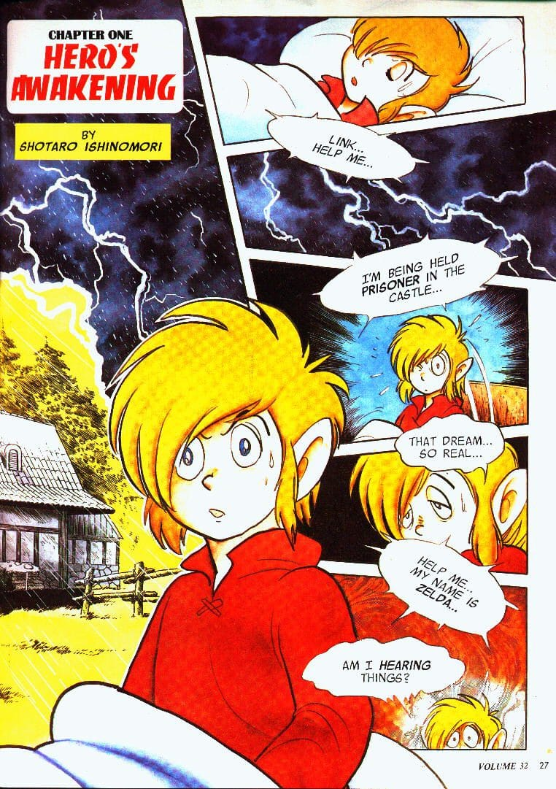
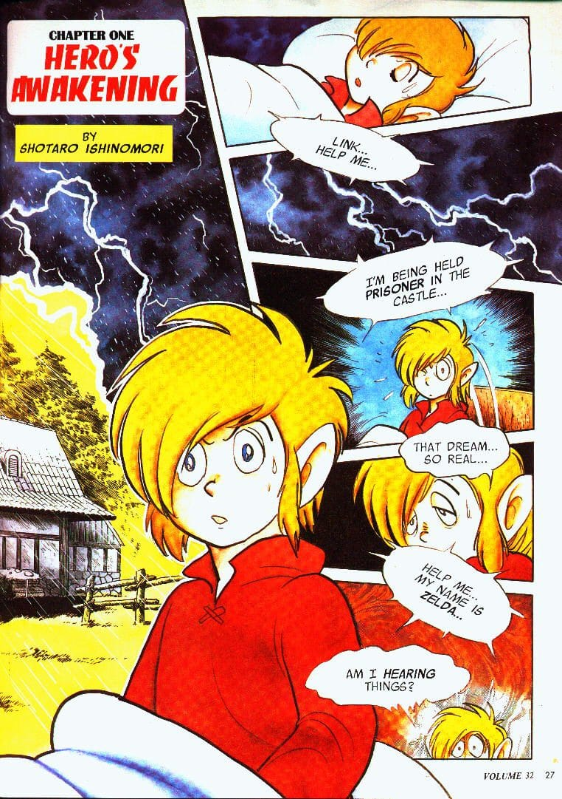
 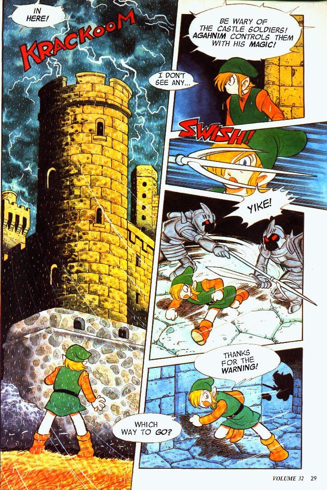
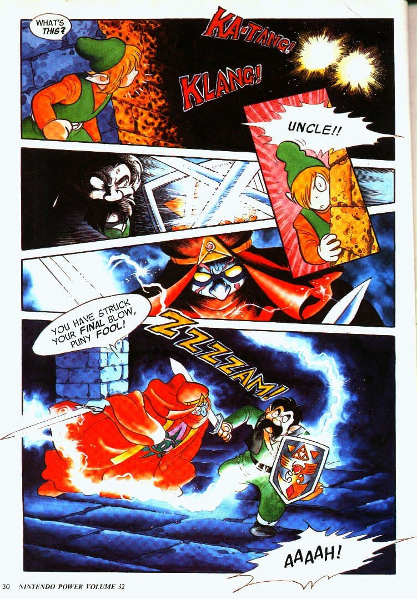
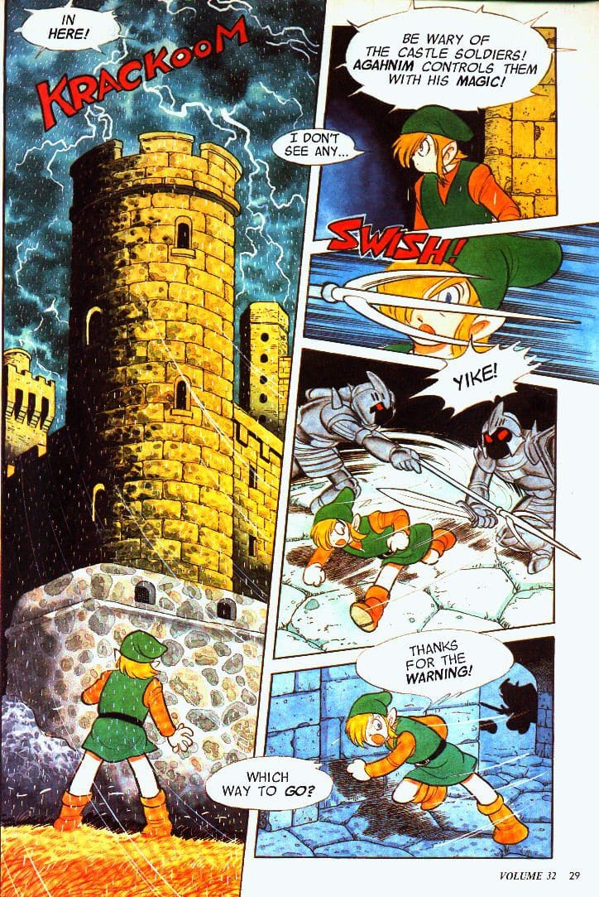
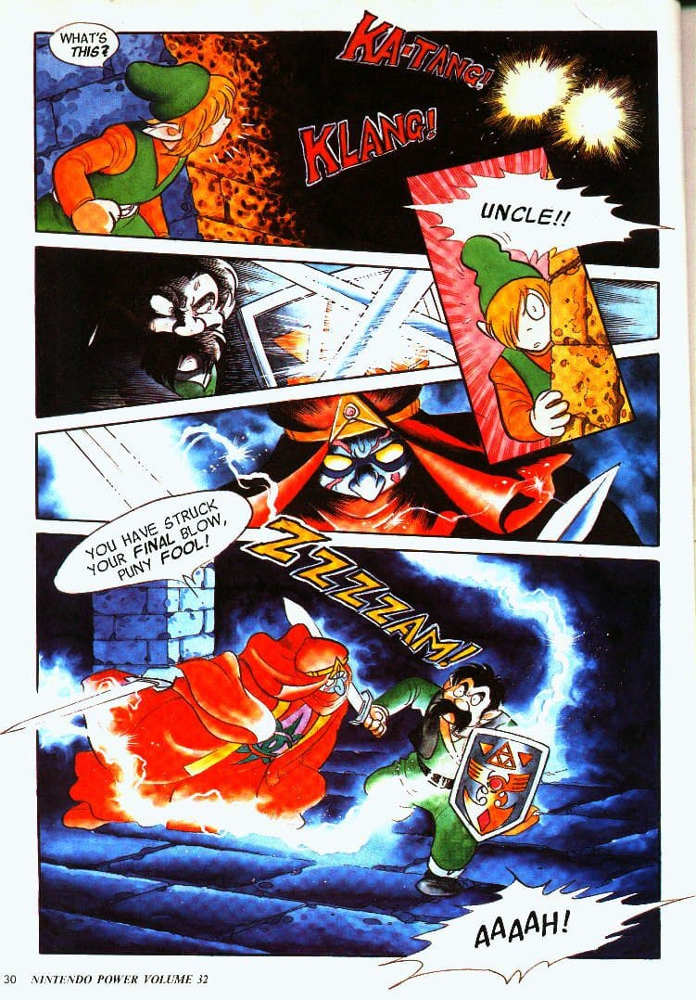

 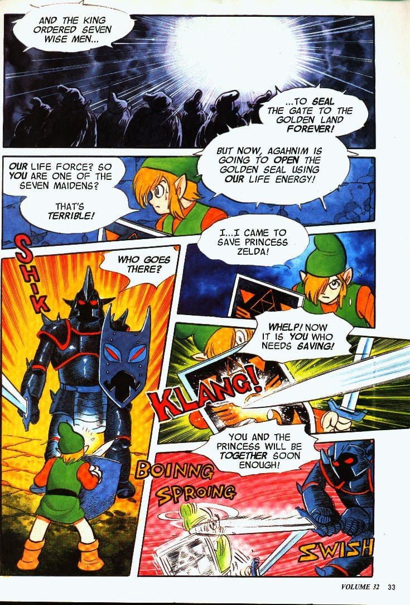
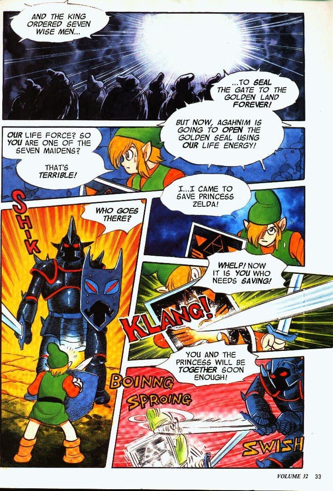

 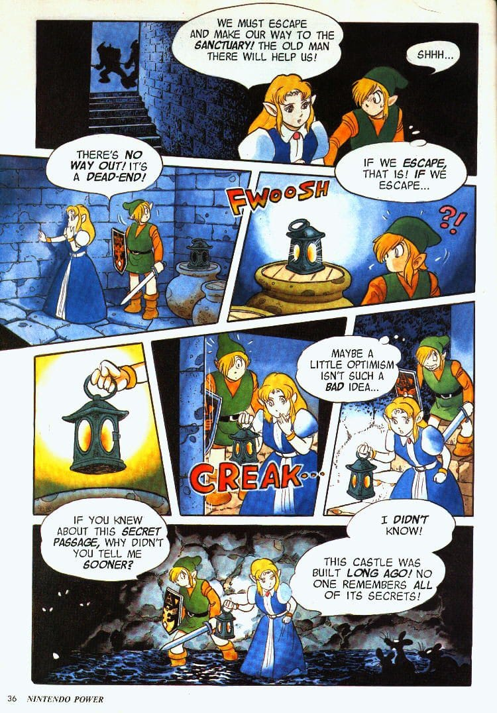
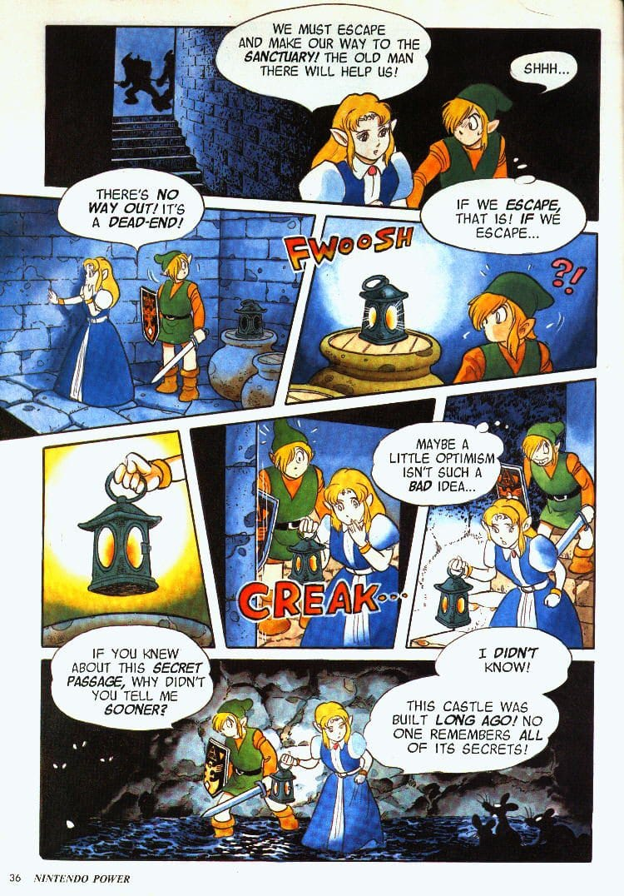

 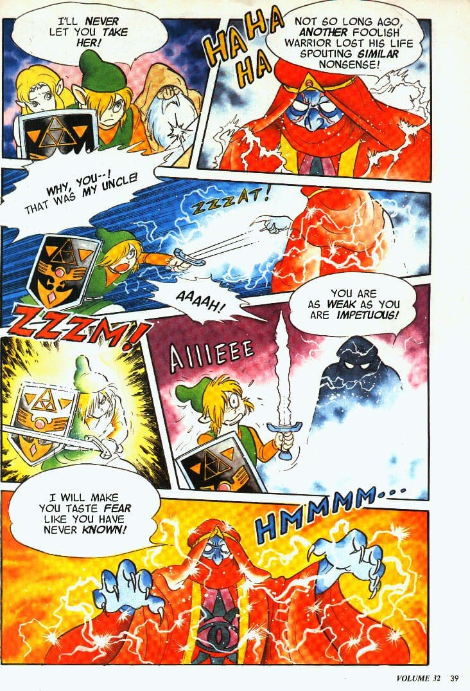
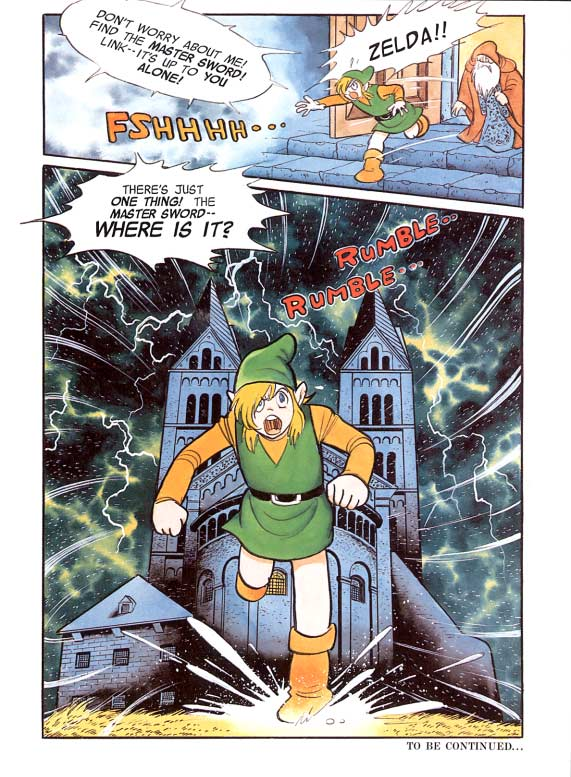
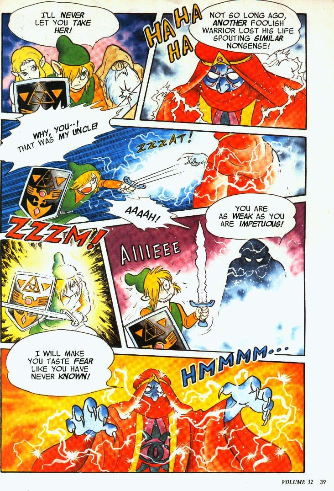
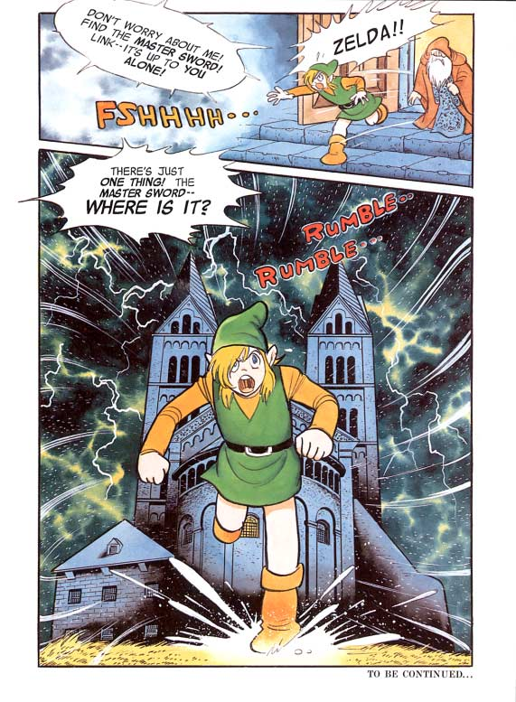